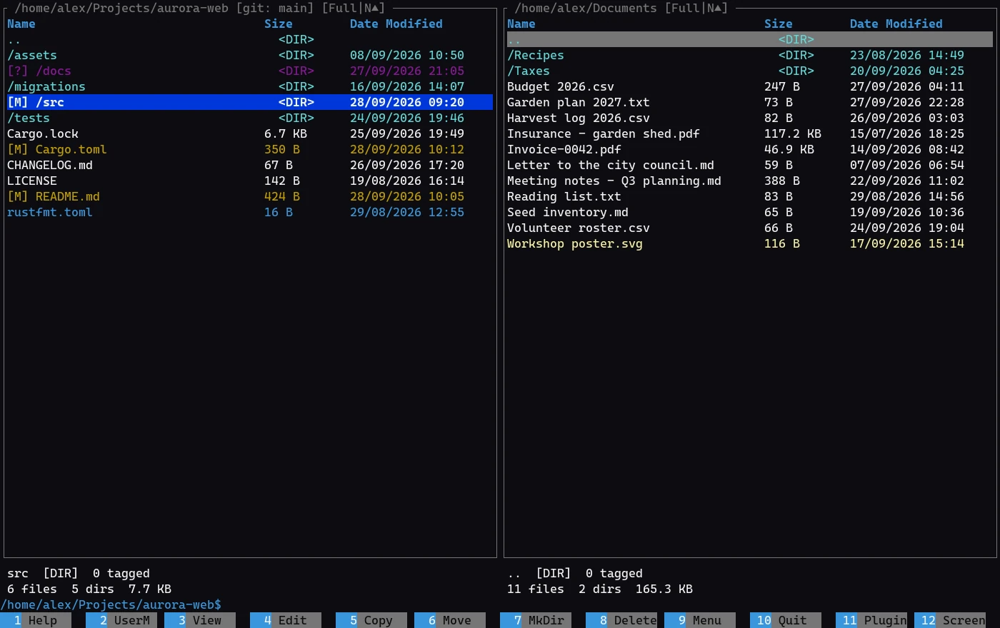
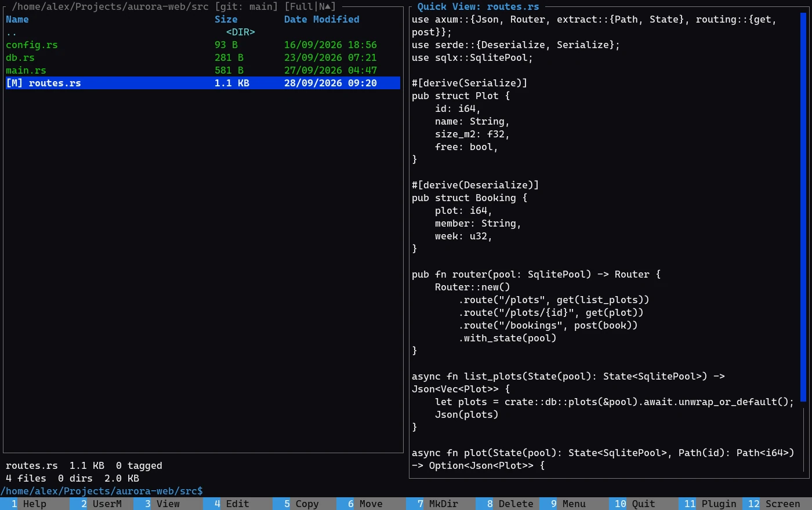
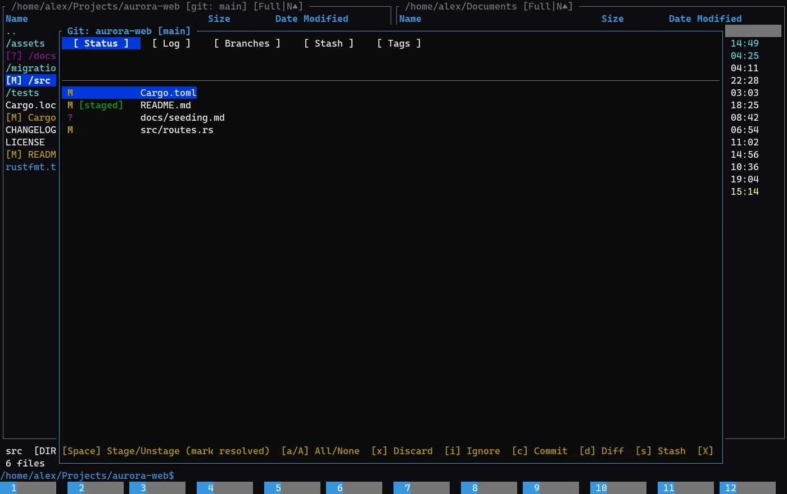
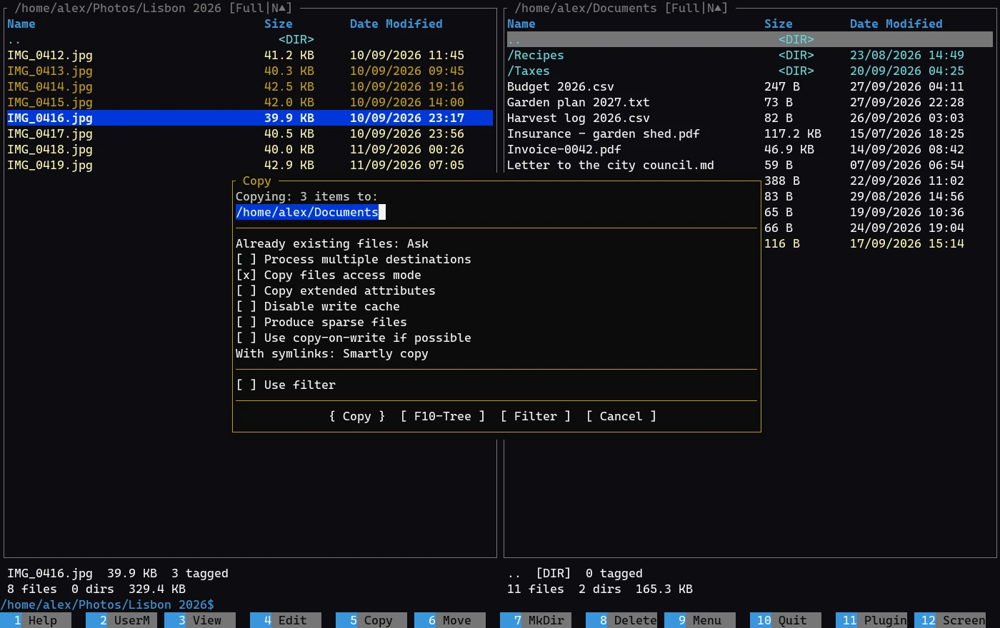
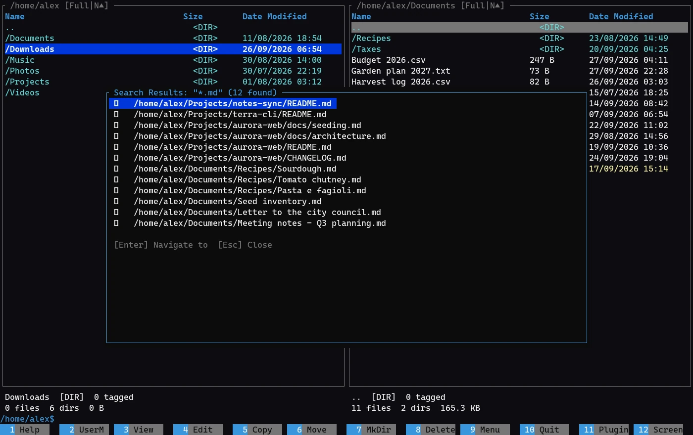
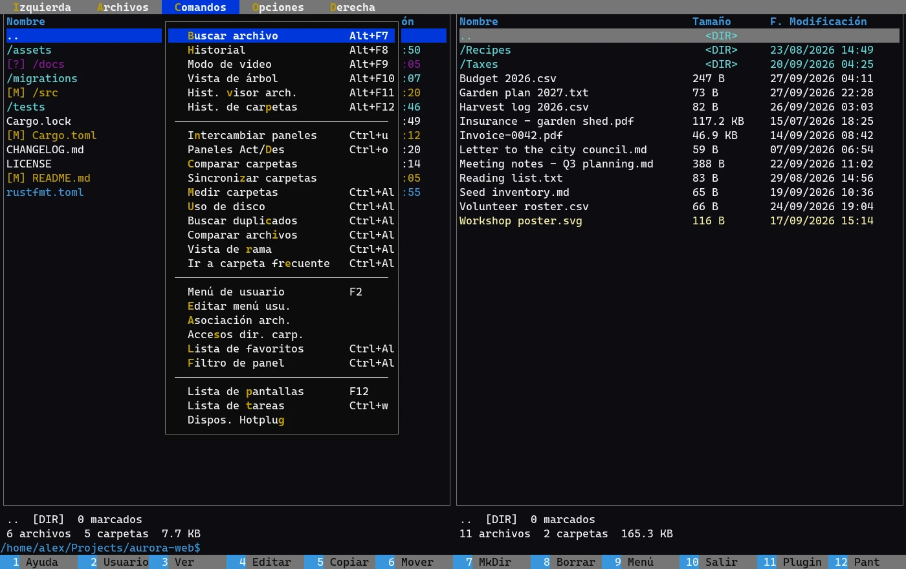
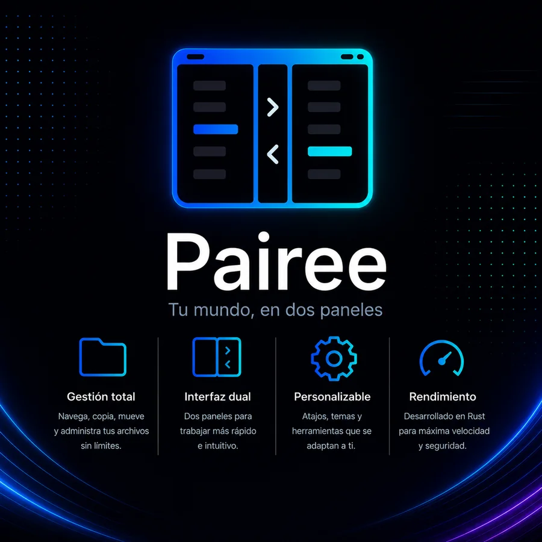

Doble panel
Dos carpetas a la vista, pestañas, vista rápida, árbol, comparación y sincronización de carpetas.
Un gestor de archivos de doble panel para la terminal, con las teclas de Norton Commander y Far Manager. Escrito en Rust: un solo ejecutable, rápido, con Git, conexiones remotas, archivos comprimidos y plugins en Lua.
Windows, Linux y macOS · Código abierto (GPL-3.0) · Se actualiza solo, con firma verificada

La rapidez de los gestores de doble panel de siempre, con las herramientas que usas cada día ya integradas.
Dos carpetas a la vista, pestañas, vista rápida, árbol, comparación y sincronización de carpetas.
Perfiles Norton Commander / Far, Explorer / VS Code / Total Commander, Neovim y yazi. Cualquier tecla se cambia desde una lista con búsqueda.
Copiar, mover y borrar corren aparte, con progreso, pausa y cancelación. La interfaz nunca se congela.
Estado de cada archivo en los paneles y un panel de Git para preparar, confirmar, ver el historial, ramas, stash y etiquetas.
SFTP, FTP, S3 y WebDAV en un panel, con las contraseñas guardadas en el llavero del sistema.
Entra en zip, tar, tar.gz, tar.xz y 7z como en una carpeta; comprime y extrae sin herramientas externas.
Visor y editor propios con resaltado de sintaxis, vista hexadecimal, vista previa de imágenes y detección de codificación.
Comandos, visores y hooks escritos en Lua, aislados en modo seguro, con un catálogo firmado de la comunidad.
Reconoce cómo lo instalaste y se actualiza verificando SHA-256 y la firma minisign; si lo maneja tu gestor de paquetes, te da el comando.
La vista rápida muestra en el otro panel el archivo bajo el cursor: código, texto, carpetas o imágenes. Con F3 y F4 abres el visor y el editor propios.

Los paneles marcan lo modificado y lo nuevo. El panel de Git prepara, descarta y confirma cambios, y muestra historial, ramas, stash y etiquetas.

Marca archivos con Insert, pulsa F5 y sigue trabajando: la copia corre en segundo plano y puedes pausarla, reanudarla o deshacerla.

Busca por nombre y por contenido en todo un árbol de carpetas, y salta al resultado. También encuentra duplicados y calcula el uso de disco.

Interfaz y ayuda completas en español e inglés; otros idiomas se agregan con un archivo TOML. Temas de colores también en TOML.

Capturas reales de Pairee recorriendo una carpeta de ejemplo con datos ficticios.
El instalador descarga la última versión, verifica su SHA-256 y su firma minisign y la deja en tu carpeta de usuario. Sin permisos de administrador.
uninstall.
| Windows | Linux | macOS | |
|---|---|---|---|
| Programa | %LOCALAPPDATA%\Programs\FittyAr\Pairee |
~/.local/lib/FittyAr/Pairee |
donde lo descomprimas |
| Configuración | %APPDATA%\FittyAr\Pairee\config |
~/.config/FittyAr/Pairee |
~/Library/Application Support/FittyAr/Pairee |
| Registro | %APPDATA%\FittyAr\Pairee\cache |
~/.cache/FittyAr/Pairee |
~/Library/Caches/FittyAr/Pairee |
| Datos de plugins | %APPDATA%\FittyAr\Pairee\plugin-data |
~/.local/share/FittyAr/Pairee |
~/Library/Application Support/FittyAr/Pairee |
En Linux se respetan XDG_CONFIG_HOME, XDG_CACHE_HOME y XDG_DATA_HOME. Las carpetas de versiones anteriores (pairee) se mueven solas al primer inicio; no se borra nada.
Pairee une la comodidad de Norton Commander y Far Manager con lo que hoy se espera: seguridad de memoria, operaciones en paralelo y un único ejecutable que funciona igual en Windows, Linux y macOS.
Está en beta pública y en desarrollo activo. Pruébalo, cuéntanos qué te falta o escribe tu propio plugin.
Enviar sugerencias ↗